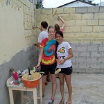
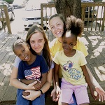

CCF is dedicated to serving our campus and community through compassion events. See below for information about annual events and trips, and check out the Compassion Events page for information on weekly, Altanta-area service opportunities through CCF.

Restoration Atlanta
| One Saturday each semester, 8am-1pmMeet at CCF for a free breakfast and a day of compassion, serving 6 non-profits that work with Atlanta's urban poor. Service opportunities include working with the Metro Atlanta Task Force for the Homeless, the Atlanta Gateway Center, City of Refuge, Salvation Army, the Atlanta Dream Center, and the Atlanta Mission. Wear work clothes! Click here for more information. Check out pictures from last year's Restoration Atlanta here.


Puebla, Mexico Winter Break Service Trip
| Every DecemberPuebla description. Check out pictures from last year's Puebla trip here.


Juarez, Mexico Spring Break
| Every Spring BreakJuarez description

Ecuador Service Trip
| Every MayParticipate in various service projects to help better the quality of life in a rural beach town. Check out pictures from last year's Ecuador trip here.
Living Water Guatemala Service Trip
| Every JulyWork in a village in Guatemala in July! Click here for more information.

More Events
Check the weekly CCF Grapevine email newsletter for updates on regularly scheduled events, as well as information on other events that may be going on throughout the semester! Subscribe below or email Neal Baker at neal@gtccf.org if you would like to be added to this email list.
Meet the Compassion Staff
CCF is run by sixteen interns who rotate each school year, and work closely with the ministry's eight full-time, adult staff members. We have three interns and one staff member dedicated to CCF's compassion events and ministry. Read below to learn all about the compassion staff, and visit the staff page to learn about the rest of the staff.

Marc Smith
| Associate Minister | marc@gtccf.org
Marc Smith graduated from Georgia Tech with a degree in Mechanical Engineering in 2002. The following year he interned at GTCCF, after which he married his wife Leslie. Marc and Leslie moved to TN, where Marc earned his Masters of Divinity from Emmanuel School of Religion. Marc has worked in student ministry since 2006. In 2008 God blessed Marc & Leslie with their son Gabriel. In 2011 Marc returned to GTCCF. In January of 2012 Marc & Leslie welcomed their second boy, Liam, into the world! Marc helps students fight poverty in Atlanta and around the world.

Matthew Kinnemore
| Compassion Intern
Hometown: Stone Mountain, Georgia
Major: Mechanical Engineering
Fun Fact: Something that a lot of people don't know about Matt is that he's been playing the drums since he was five! He doesn't play much anymore, but still enjoys an occasional jam session.
"I'm working as an intern because I really enjoy serving people and my community the way Christ serves us."

Lindsay Pigford
| Compassion Intern
Hometown: Fayetteville, Georgia
Major: International Affairs and Modern Languages (Spanish)
Fun Fact: Some have called Lindsay the "Christmas Queen".
"I want to spend my life serving and loving others, and I'm so excited to be working at a ministry that is focused on just that."

Kevin Carr
| Compassion Intern
Hometown: Newnan, Georgia
Major: Chemical and Biomolecular Engineering
Fun Fact: Kevin really, really loves to play ping pong!
"I am here to love students and help them to connect with God."